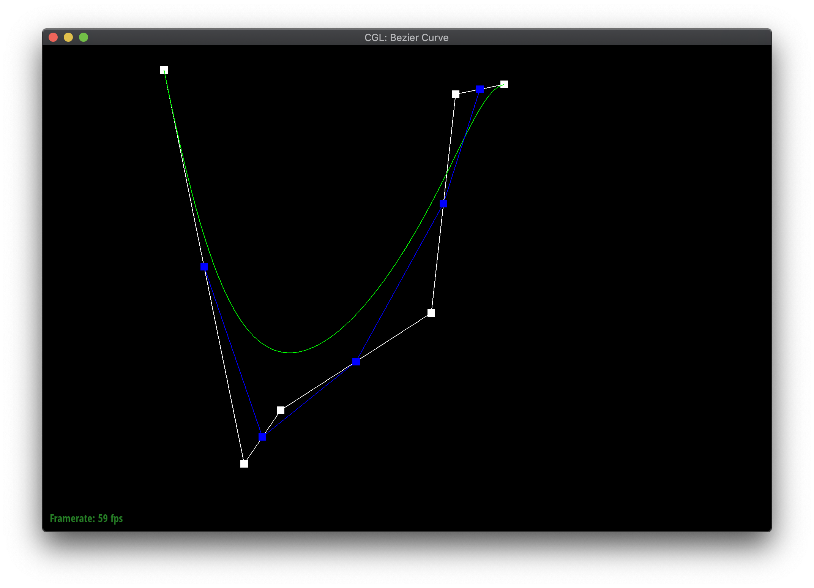
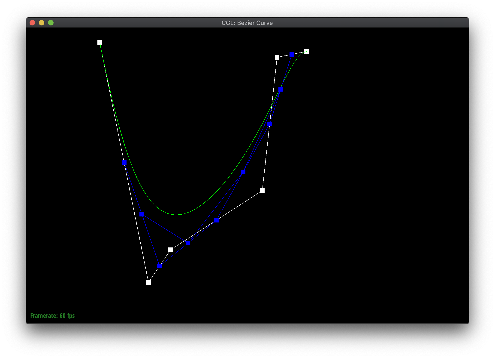
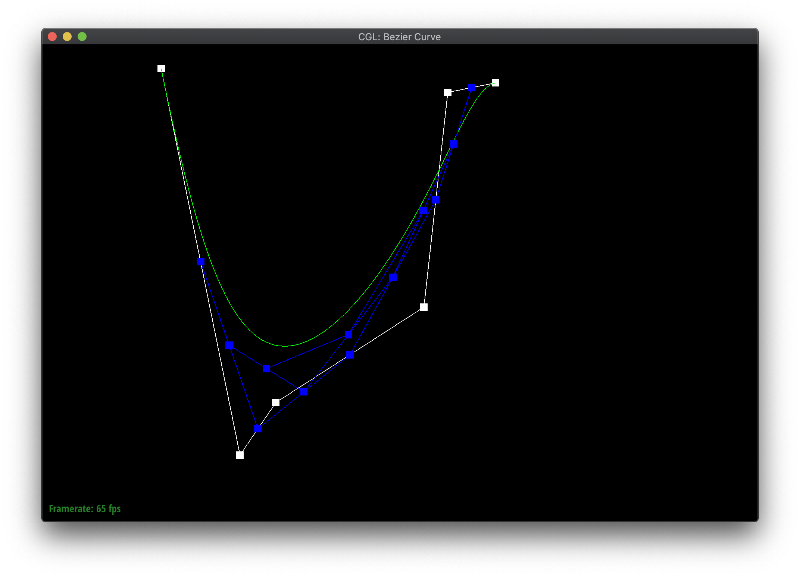
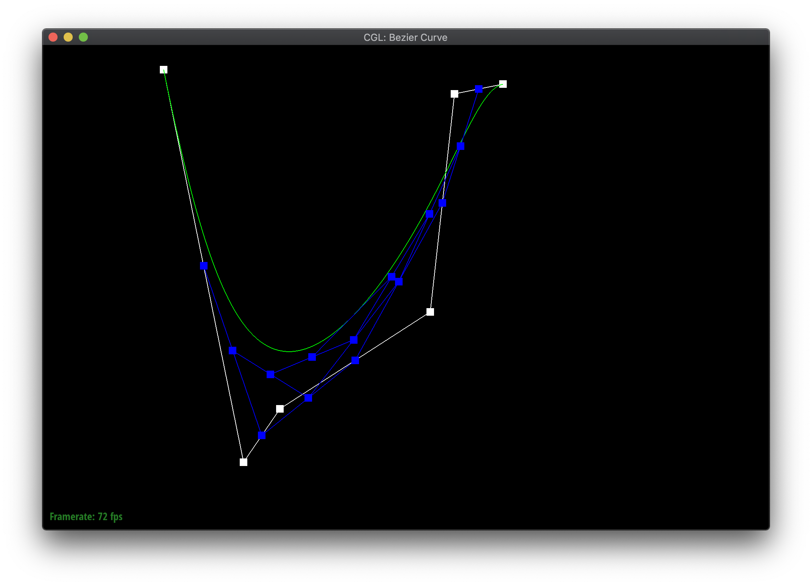
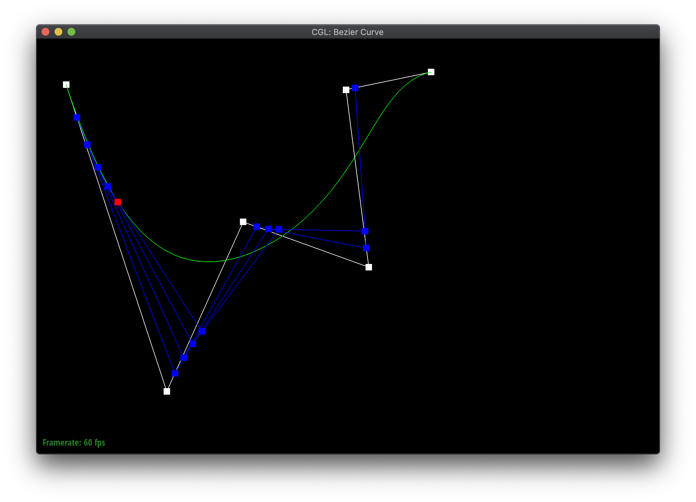

Overview
Give a high-level overview of what you implemented in this project. Think about what you've built as a whole. Share your thoughts on what interesting things you've learned from completing the project.
Section I: Bezier Curves and Surfaces
Part 1: Bezier curves with 1D de Casteljau subdivision
de Casteljau's algorithm is a recursive algorithm for generating Bezier curves. This algorithm takes as input n control points, as well as a parameter t. It returns a point on the Bezier curve defined by the provided control points. At each step of the algorithm, the n control points are grouped two at a time from left to right and linearly interpolated, with the interpolation weighted according to the provided t parameter. This provides n-1 intermediate control points. The algorithm repeats recursively on the intermediate control points until only one point is returned; this point lies on the Bezier curve. By running this algorithm many times with different values of t, we can generate a Bezier curve.
|

|

|
|

|

|
|
|

|
Part 2: Bezier surfaces with separable 1D de Casteljau subdivision
de Casteljau's algorithm can be extended to create Bezier surfaces in three dimensions. To do so, we take in an input of k arrays which contain n three-dimensional points each, and two parameters, u and v. For each of the k arrays, we evaluate a point on the Bezier curve defined by the n points in the array and the parameter u, as in part 1. Then, once we have these k points from the k Bezier curves, we use these k points as control points and the parameter v to generate a point on a Bezier curve which goes through the ones defined by the arrays. This generated point lies on the Bezier surface. We can run this algorithm many times for different values of u and v to create a Bezier surface.
Section II: Sampling
Part 3: Average normals for half-edge meshes
We implemented the area-weighted vertex normals by first calculating the normals of each of the faces around the
vertex. For this we traversed the faces around the vertex using the halfedges and then used the built-in normal
function for each face. Since each normal was not normalized, we could use it to calculate the area of the face
by using the formula: 1/2 * (magnitude of normal vector).
We then added the area * normal vector of each face to a cumulative vertex normal, then normalized and returned
the result.

|

|
Part 4: Half-edge flip
Implementation of the edge flipping task was quite difficult at first. We had trouble understanding exactly what needed to be changed in all of the mesh elements, and we attempted to implement this entire task without consulting rigorous visual aid with labeled elements. As a result, our code quite unstructured, messy, and difficult to debug. The most important change we made in our approach after having frustration debugging was to use a labeled visual guide of the half-edges and vertices. We rewrote the method from scratch and the first thing we did was put all of the mesh elements from the diagram directly into the code. This is in contrast to what we were doing originally, which was essentially to just compute mesh elements on the fly from the flipped edge - a needlessly complicated process. Naturally, calculating all relevant mesh elements up front was a massive step-up in terms of readability and simplicity and made implementation of this method quite simple.

Part 5: Half-edge split
We implemented the edge split operation by first storing different variables for each element in the mesh. We then wrote down which new elements needed to be created and instantiated them. We went through each of the new vertices, faces, and edges and set their halfedges to the relevant halfedges. To add the new vertex, we took the parameter edge e0 and changed one of its vertices to be the new vertex. We then took the halfedges of e0 and modified them so that they were still the halfedges of e0, but only between the original vertex of e0 and the new vertex. We reassigned the pointers of all modified halfedges according to their new positions.While we were debugging, naming each of the edge/face/vertex variables with clear names (e.g. ab for an edge between a and b) helped significantly.

|

|

|
Part 6: Loop subdivision for mesh upsampling
We implemented the loop subdivision by first iterating through every edge in the mesh and calculating the new positions for each of its endpoints as well as the new vertex to be placed at its midpoint. We then iterated again through the edges of the mesh and split all edges that were not new edges. We also updated the positions of the newly created vertices in this step. Since splitting an edge added new edges onto the end of the mesh, we broke out of the loop as soon as we discovered the first new edge. We then iterated again through the edges and for each new edge in the vertex, we checked if it was connecting an old vertex and a new vertex and if so, we flipped it.To update the original vertices, we iterated through each vertex and if it was not a new vertex, we updated its position to the new position stored within it. Finally, to facilitate future subdivisions, we set the isNew variable for each edge and vertex to false.
Smoothing effect
One thing to notice is that when doing loop subdivision, sharp edges and corners quickly "smooth out" and become level with the rest of the mesh. Here's an example on a modified icosahedron:
Asymmetry effect on cube.dae
Note that when we loop subdivide a cube mesh, it becomes asymmetric as shown:
Creating symmetry
To cause the mesh to be symmetric under loop subdivision, we can flip the bottom edge of the default mesh like so:Section III: Optional Extra Credit
If you are not participating in the optional mesh competition, don't worry about this section!